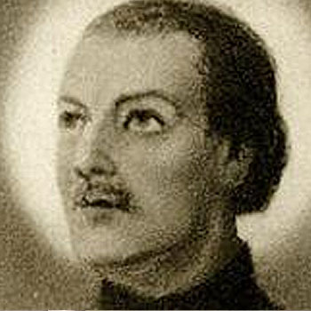

Isusovački blaženici
Brat
Bl. Ralf Ashley
† 1607.
Isusovački brat pomagao je Edwardu Oldcorneu u engleskoj misiji, a nakon uhićenja i mučenja ostao vjeran katoličkoj vjeri sve do javnoga pogubljenja.
Tekst je preveden i prilagođen uz pomoć umjetne inteligencije.

Izvor slike
- Spomendan
- 1. prosinca
- Zaštitništvo
- Nije navedeno u izvoru
- Životni vijek
- † 1607.
- Djelovanje
- Svakodnevni rad i skrovita služba · Progoni i progonstvo · Mučeništvo
- Razdoblje
- 17. stoljeće
- Povratak u Englesku
- 1598.
- Beatifikacija
- 1929.
- Napomena o datumu
- Zaglavlje izvora navodi 1607., dok životopis navodi 1606.
- Rođenje — dostupni podaci
- Datum i godina rođenja nisu potvrđeni u provjerenim izvorima.
- Mjesto rođenja
- Nije utvrđeno
- Datum smrti
- 07.04.1607.
- Mjesto smrti/mučeništva
- Red Hill, Worcester, Engleska
- Okolnosti smrti/mučeništva
- Pogubljen nakon uhićenja s Edwardom Oldcorneom; odbio odati katoličke svećenike.
- Uloga
- Brat
- Mučenik
- Da
- Ostale oznake
- Kuhar i pratitelj Edwarda Oldcornea
- Pripadnost
- Isusovac
- Razlike u izvorima
- Datum smrti u podatcima zbirke: 07.04.1607. Raniji biografski izvor navodi 07.04.1606. Razlika izvora nije razriješena.
- Drugi oblici imena
- Ralph Ashley · Ralph
- Napomene uz podatke
- Mjesto i država rođenja nisu potvrđeni. Španjolska u zaglavlju Jesuits.global nije potvrđena kao rodna država; Valladolid je mjesto stupanja u Družbu.
Životopis
Ralph Ashley bio je isusovački redovnički brat. Najraniji zapisi spominju ga kao kuhara u kolegiju u Douaiju. Dana 28. travnja 1590. otišao je u engleski kolegij u Valladolidu i ondje pristupio Družbi Isusovoj. Zbog slabijega zdravlja vraćao se u Englesku; na putu su ga zarobili nizozemski napadači. Njegovu je postojanost u toj opasnosti zabilježio isusovac Oswald Tesimond.
U Englesku je stigao 9. ožujka 1598. te osam godina pomagao svećeniku Edwardu Oldcorneu. Nakon Barutne urote obojica su uhićena u Hindlipu kraj Worcestera i odvedena u londonski Tower. Ondje su zatočeni i Henry Garnet te brat Nikola Owen. Ashley i Owen podvrgnuti su mučenju; Owen je od posljedica umro. Ashley nije odavao ljude ni mjesta povezana s Oldcorneovim apostolatom.
Sačuvani zapisnici ispitivanja, prema povijesnome prikazu Patricka Ryana, sadržavaju njegove kratke odgovore i drhtave potpise. Ashley i Oldcorne vraćeni su u Worcester, osuđeni i pogubljeni na Red Hillu 7. travnja 1606. Ashley je pred smrt molio i tražio oproštenje. Izjavio je da umire zbog vjere, a ne zbog izdaje. Njegovo je mučeništvo povezano sa službom redovničkoga brata uz progonjenoga svećenika; blaženim je proglašen 1929.
Tekst je preveden i prilagođen uz pomoć umjetne inteligencije.
Pročitaj više na izvornoj stranici ↗